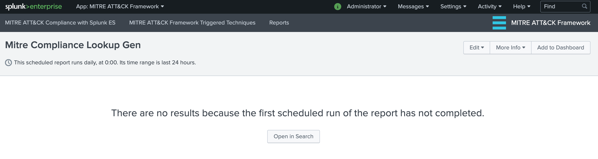
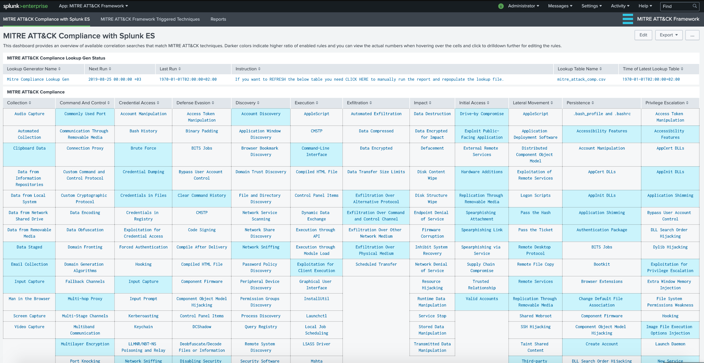

Installation¶
Download and Install¶
- Download the latest AppInspect Passed version from: https://splunkbase.splunk.com/app/4617/
- For the latest changes and development efforts: https://github.com/seynur/DA-ESS-MitreContent/
- Install the application on Splunk Enterprise. DA-ESS-MitreContent should be installed on the Search Head or Search Head Cluster where Enterprise Security Application resides.
- For details on add-on installation please refer to Splunk Documentation: https://docs.splunk.com/Documentation/AddOns/released/Overview/Installingadd-ons
Initial Setup¶
Upon installation of the add-on, you may need to initially run a search to populate the lookup table. The report simply checks for available (and enabled) Correlation Searches that are tagged for MITRE ATT&CK techniques within the Analytic Stories.
- First, please check the table at the top named “MITRE ATT&CK Compliance Lookup Gen Status” for lookup table status.

- Click on the row if the lookup table appears to be empty. This will open a new windows with the “Mitre Compliance Lookup Gen” report. By default this scheduled report runs daily, at 0:00. Its time range is last 24 hours. Click Open in Search button to run this report for the first time.

- Once the search is completed, you can go back to “MITRE ATT&CK Compliance with Splunk ES” dashboard to view the level of existing rules (enabled and available) in comparison to MITRE ATT&CK techniques.

User Guide¶
By default, this application comes with 2 views.
- MITRE ATT&CK Compliance with Splunk ES
- MITRE ATT&CK Framework Triggered Techniques
- How To Match a Correlation Search with Framework
MITRE ATT&CK Compliance with Splunk ES¶
Each cell containing a technique is colored based on the percentage of enabled correlation searches.
If there isn’t any related correlation searches, the cell is left uncolored.
If there are available correlation searches within Enterprise Security, then cells are colored based on percentage of enabled/active ones.
Currently the ranges are set as follows:
- low: 0-30% enabled
- medium: 30-50% enabled
- high: 70%+ enabled
- You can mouse over to the cells that contain techniques in order to view the number of available and enabled correlation rules that are specific to that technique.
MITRE ATT&CK Framework Triggered Techniques¶
This dashboard/form has filtering options based on “Event Time Range” and “Urgency” level of Notable Events. Currently following panels are available:
- Triggered Tactics: Shows an overview of number of triggered Notable Events according to MITRE ATT&CK tactics.
- Techniques Triggered by Notable Assets: Shows the number of triggered Notable Events according to MITRE ATT&CK techniques grouped by Notable Assets.
notable_assetis populated bysrc,destoruserfrom related Data Models. - MITRE ATT&CK Framework: Provides a detailed match of triggered correlation searches with techniques and colored based on urgency level.

How To Match a Correlation Search with Framework¶
The view in the application utilized Analytic Stories that are tagged with the Correlation Searches. Hence, in order to associate a Correlation Search with MITRE ATT&CK Techniques, you will need to create a new Analytic Story and add your Correlation Search with the appropriate tags.
Note: Please go to Splunk Documentation on how to create a Correlation Search .
For example, if we want the Correlation Search “Brute Force Access Behavior Detected” to be associated with “Brute Force” Technique under “Credential Access” tactic, we need to perform the following steps:
- Go to “Configure –> Content –> Content Management” from Enterprise Security Application menu. Click on “Create New Content” and select “Analytic Story”

- Enter a Name and fill other details as necessary for this analytic story. Click on “Add Search” and select “Brute Force Access Behavior Detected”


- Enter
detectionfor Type field and under Annotations entermitre_attackfor Name andBrute Forcefor Mappings (this should match the technique)

- Click Save to save the Analytic Story with annotation and mapping with the defined correlation search. You can add many correlation searches under one analytic story with defined mappings.
Once saved, the correlation search will populate both the Compliance and Triggered Techniques dashboards.